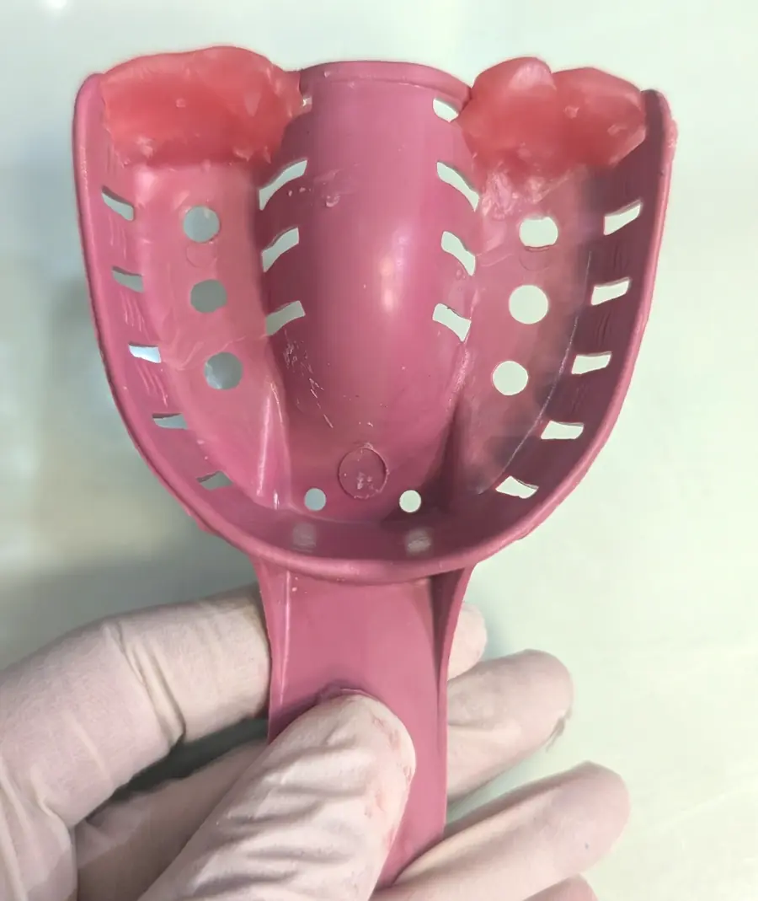

نسخه استخراجشده؛ ترجمه یا تأیید علمی انجام نشده است. وضعیت: captured
با تری استوک از دندانهای خلفی قالب گرفتهای. ماده از انتهای تری به سمت عقب رفته، گگ بیمار تحریک شده و در دندانهای انتهایی ماده کشیده شده است. چه چیزی کم بود؟

وقتی ماده در انتهای تری مسیر فرار دارد، فشار هیدرولیک کافی برای فشرده شدن ماده دور دندانها ایجاد نمیشود؛ ضخامت ماده در ناحیهی دندانی کم میشود و هنگام خارج کردن قالب، ماده در دندانهای انتهایی دچار کشیدگی (Dragging) میشود. علاوه بر این، احتمال gag reflex هم بالا میرود.
Posterior Damming: پیش از قالبگیری، انتهای تری را در ناحیهی پشت آخرین دندان و روی ریج با موم ببند. مسیر فرار بسته میشود، ماده بهجای حرکت به عقب دور دندانها میماند و فشرده میشود؛ ضخامت ماده حفظ، کشیدگی کم و دندانهای انتهایی دقیقتر ثبت میشوند.
واش داخل قالب پوتی و اطراف دندانها قرار میگیرد. تکنیک مورد استفاده: با سرنگ هوا واش را پیش از نشاندن تری به سمت خط ختم هدایت کن.
هر ماده زمان کار (WT) و زمان ست شدن (ST) مشخصی دارد و ست شدن داخل دهانی بعد از WT آغاز میشود. اگر قالب قبل از پایان WT نشانده شود، زمان باقیمانده باید به ST اضافه شود؛ یعنی صبر بیشتر در دهان، نه کمتر.
برداشتن زودهنگام قالب، شایعترین علت اعوجاج الاستیک است.
نوع سؤال: ساخت کلمه · 3 خانه
حروف منبع: ک · م · ا